When one thinks of modern technologies like Thunderbolt, 2.5 Gigabit Ethernet and modern CPUs, one would associate them with modern operating systems. How about DOS?
It might seem impossible, however I did an experiment on a relatively modern 2020 Thinkpad and found that it can still run MS-DOS 6.22. MS-DOS 6.22 is the last standalone version of DOS released by Microsoft in June 1994. This makes it 30 years old today.
I shall share the steps and challenges in locating a modern laptop capable of doing so and making the 30-year-old OS work on it with audio and networking functions. This is likely among the final generation of laptops able to run DOS natively.
Demo videos
If you are eager to jump right in, here are 2 demo videos showing MS-DOS 6.22 and some applications running on a modern 2020 Thinkpad X13 Gen 1 (Intel).
Demo video of CPUID, Descent, Doom, Planet X3, ChatGPT, Checkit
Here are the key timestamps:
- 00:20 - POST screen
- 00:36 - DOS 6.22 startup menu. Select option to enable SBEMU and Realtek 8125 2.5GbE NDIS2 driver
- 00:53 - CPU Identification Utility
- 00:58 - Descent
- 02:08 - Doom
- 03:14 - Planet X3
- 03:56 - DOS ChatGPT client
- 06:58 - Checkit 3
Running the 8088 Domination technical demo.
Background
Back in 2017, I read an article from Anandtech titled “Intel to Remove Legacy BIOS Support from UEFI by 2020”. It was a significant departure in terms of backward compatibility all the way back to the first IBM PC in 1981.
What is UEFI and its classes?
To understand the implications of this, we have to first look at what is Unified Extensible Firmware Interface (UEFI) and its type of classes.
UEFI is a modern replacement for the traditional basic input/output system (BIOS) firmware found in computers. UEFI provides a standardized interface between the operating system and the platform firmware, enabling various features and functionalities during the boot process.
BIOS was used by IBM since the very first IBM PC in 1981. When MS-DOS ran on the IBM PC, it depends on this BIOS. To maintain backward-compatibility, most IBM PC compatibles continued to implement this BIOS functions even up to relatively recent times.
As time passed, the BIOS began to show limitations such as disk sizes, bootup security and memory. UEFI was created to address these limitations.
UEFI is divided into 4 classes:
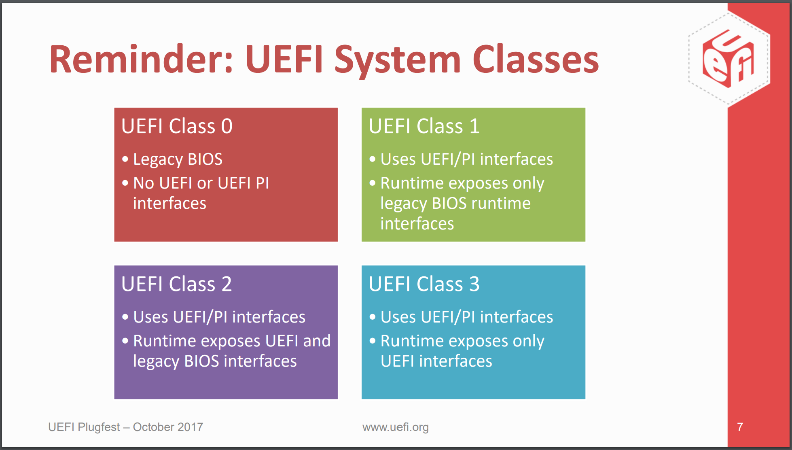Source: https://uefi.org/sites/default/files/resources/Brian_Richardson_Intel_Final.pdf
To maintain backward-compatibility, UEFI continued to provide for legacy BIOS interfaces. A UEFI Class 3 device totally does not support BIOS interfaces.
Source: Removal of Legacy Boot Support for Intel Platforms Technical Advisory
As shown in the above slides, beginning in 2020, Legacy Boot Mode through a Compatibility Support Module (CSM) will no longer be supported. Only UEFI Class 3 device which is “pure UEFI” will be validated.
This implies that DOS and operating systems that rely on BIOS routines will not be able to boot up natively on a UEFI Class 3 system, breaking away with 39 years of compatibility.
Note that x86 CPUs still have the 16-bit real mode present to run the older code. However there is no more legacy BIOS calls that DOS can utilise.
What have manufacturers done?
According to the largest PC maker in the world Lenovo:
Intel previously announced that in 2020 they are phasing out support for legacy Basic Input/Output System (BIOS) boot mode. This means that many of the Lenovo products launching in 2020 will no longer support the Legacy Boot option in BIOS. The only Boot option that will be supported on those products is Unified Extensible Firmware Interface (UEFI).
… Some Lenovo products shipping in 2020 will support Legacy Boot (depending on the model), but most will not.
Even so, unvalidated support continues in some desktop motherboards as shown by this Youtuber Omores.
He ran DOS and Windows 3.1 on an Intel 13th gen CPU although he had to use a PCI video card for the VGA BIOS support.
However, I wanted to constrain this experiment to a laptop for a more elegant portable system and avoid the space issues of keeping another desktop.
Locating a suitable laptop
I decided on the following requirements since I wanted to get a laptop to complement my Framework that I will actually use and not solely for this project.
- Official vendor support (with no third-party modification) for UEFI-CSM
- Thunderbolt capable for low-level hardware expansion (a feature that actually came useful in this experiment)
- Strong preference for a Thinkpad since I’m a fan of this brand
- Ultraportable to reduce weight
- S3 standby sleep state preferred for more reliable sleep state
The first requirement is obviously the most important. Although Intel officially stopped support in 2020, in reality many companies have ceased UEFI-CSM support before that. Determining whether a laptop’s UEFI actually has this relatively obscure feature is tedious and sometimes impossible as that requires poring through user guides to see if that is available assuming if it is even documented.
Thankfully I found that Lenovo has a very useful website called the Lenovo BIOS Simulator to inspect what options are available for their more recent products.
Since 2020 is the cutoff date mentioned by Lenovo, I started my search with X-series (ultraportable-class) machines released in that year.
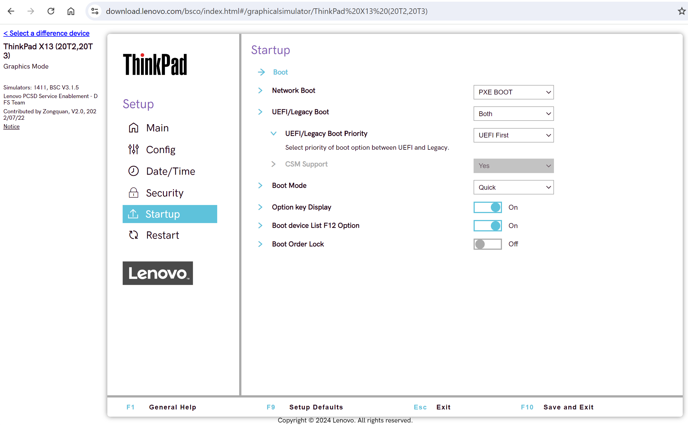The Thinkpad X13 Gen 1 (Intel) shows the CSM option. The AMD variant of the same generation does not have it.
Based on the simulator, I can additionally determine that the following 2020 models also support UEFI-CSM:
- T14 Gen 1 (Intel only)
- T14s Gen 1 (Intel only)
- L13 Yoga Gen 1 (Intel only)
- E14 Gen 2-ARE
- E15 Gen 1
- L13/L14/L15 Gen 1 (Intel/AMD)
- X1 Carbon 8th Gen
- X1 Yoga 5th Gen
- P14s Gen 1 (Intel only)
- P15s Gen 1
Model generations after the above no longer have the UEFI-CSM option.
I did try looking up manuals of other manufacturers to see if this UEFI-CSM feature is documented but to no avail. To be fair, there could be other laptops that support this but short of purchasing tons of machines to trial-and-error, there is no feasible way for me to determine this.
S3 standby
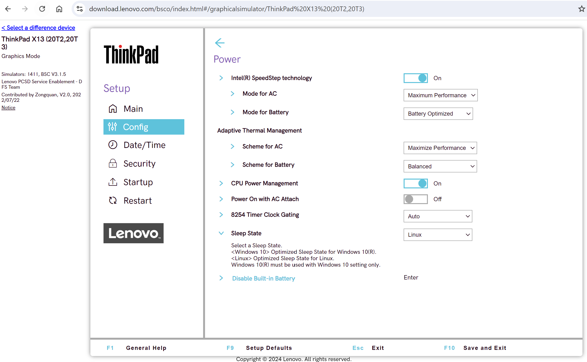I would find out that S3 Standby Sleep state (Linux option) is also supported on this machine which is a bonus. This is compared to the more relatively buggy and power hungry S0 Modern Standby now only supported by newer machines.
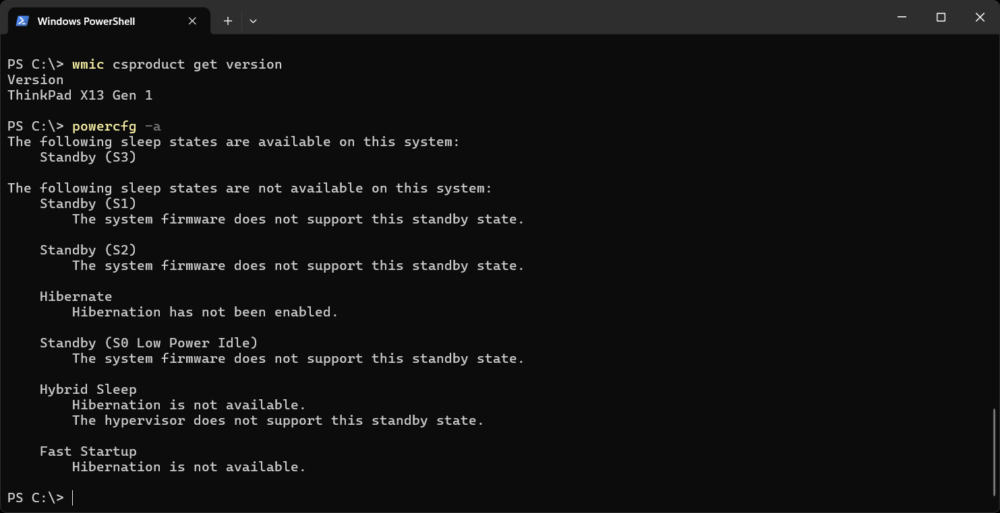The powercfg tool confirms the S3 Standby state is available.
Armed with this research, I went ahead to purchase a Thinkpad X13 Gen 1 (Intel) whose price in the second-hand market has declined sufficiently such that I can afford this without breaking the bank.
Specification
These are the specifications specific to the Thinkpad I got. Most of the features which are obviously not relevant to DOS but more useful to my day-to-day use.
- Intel Core i5-10310U 1.7Ghz (6M Cache, up to 4.40 GHz)
- Intel UHD Graphics
- 16GB RAM (soldered in)
- High Definition (HD) Audio with Realtek ALC3287 codec
- 13.3" IPS display with 1920x1080 resolution
- 512GB SK hynix Gold P31 PCIe 3.0 NVME (for booting modern OS)
- 4GB USB 2.0 Sandisk Cruzer Titanium (for DOS boot)
- Intel Gigabit PRO/1000
- Intel Wi-Fi 6 AX201, 802.11ax 2x2 Wi-Fi + Bluetooth 5.1 (soldered in)
- Ports
- 1x USB 3.2 Gen 1
- 1x USB 3.2 Gen 1 (Always On)
- 1x USB-C 3.2 Gen 1
- 1x USB-C 3.2 Gen 2 / Thunderbolt 3
- 1x HDMI 1.4b
- 1x Ethernet extension connector
- 1x Headphone / microphone combo jack (3.5mm)
Setup process
BIOS configuration
I paid special attention to the following BIOS settings.
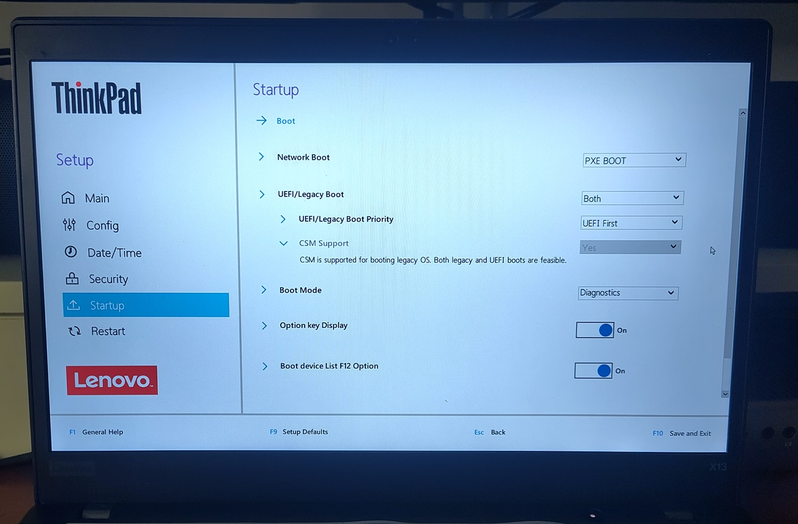UEFI-CSM legacy enabled. For this option to be set, Secure Boot and Kernel DMA has to be disabled.
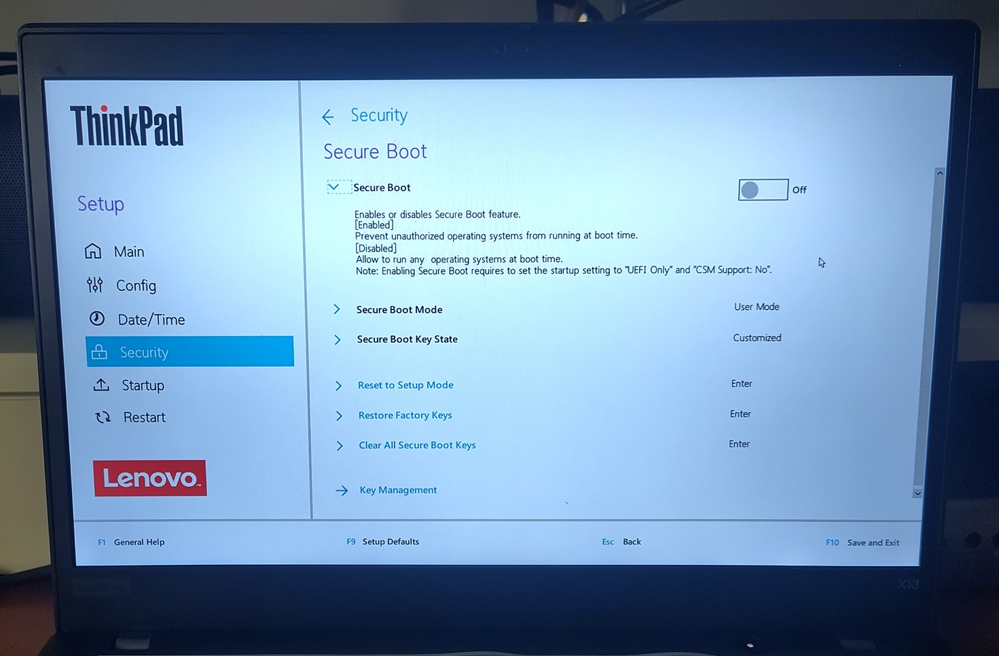Secure Boot disabled.
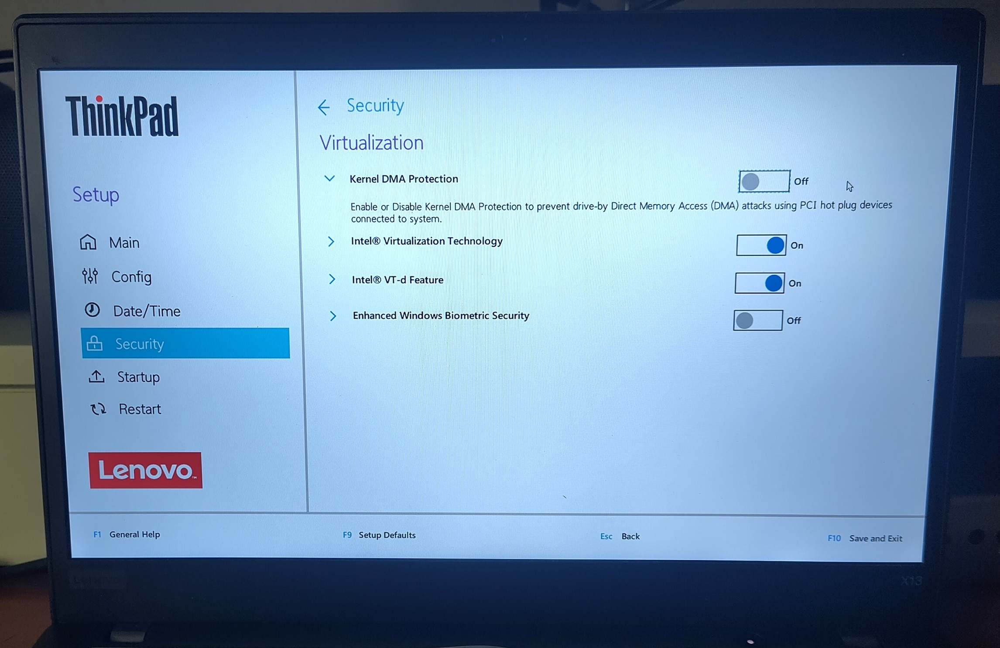Kernel DMA protection disabled.
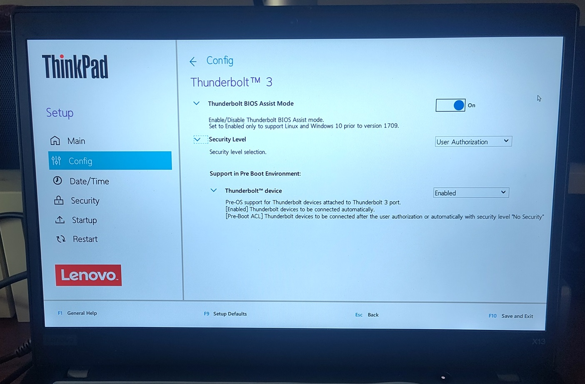Enable Thunderbolt BIOS assist mode and support in Pre Boot Environment to enable Thunderbolt devices to be used if the operating system cannot manage it like DOS.
DOS setup
I opted to have DOS installed on an external USB flash drive as it requires a legacy MBR partition table. I do not want it to interfere with the internal NVME drive containing my modern operating systems with the GPT partition table.
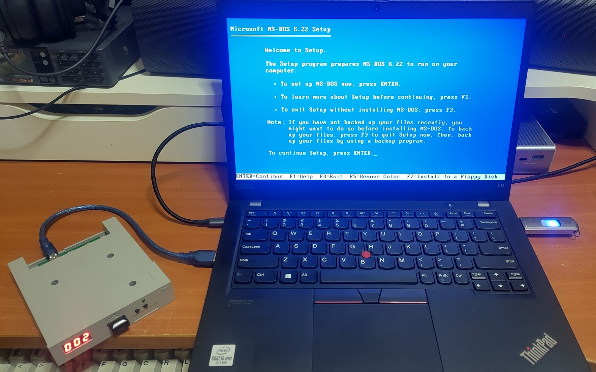A USB floppy drive/emulator can be used to do the installation as the BIOS recognises the drive and DOS assigns it the A: drive letter.
This setup steps should work similarly for FreeDOS as well.
DOS configuration
In order to consider a machine as “properly” set up, my personal definition is that it should have working audio and networking. Due to limited memory, I set up a DOS menu configuration to load different sets of driver configuration depending on my needs at the moment.
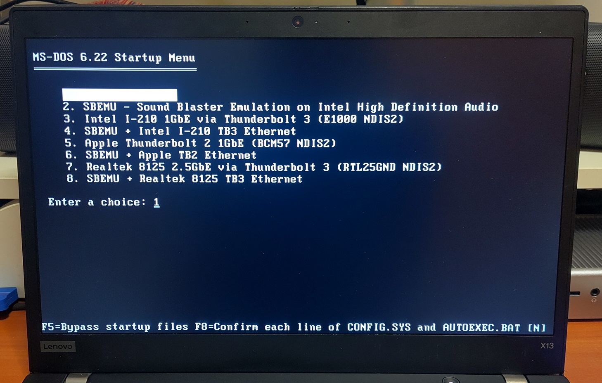The first option that is not legible is Basic DOS Mode to not load memory, sound and network drivers for a relatively clean start. The other options load a combination of different audio and network drivers.
For the detailed config.sys and autoexec.bat files I used, you can go to this Github repo link.
Audio Configuration
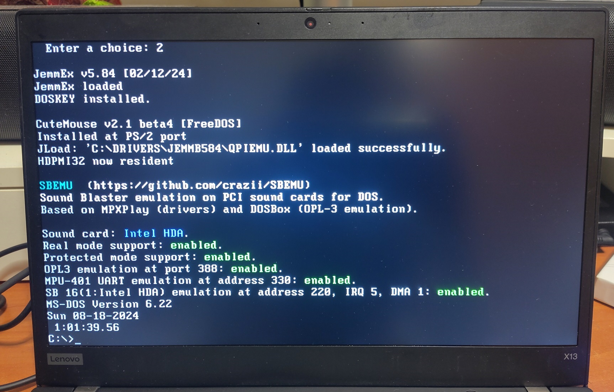The audio driver is provided by SBEMU. It’s a relatively new project that provides Sound Blaster compatibility to modern sound hardware like Intel HD Audio and many other chips.
Network Interface Card (NIC) configuration
Since the X13G1 has an onboard Intel I-219 Gigabit Ethernet adapter, I initially attempted to try to use that in DOS.
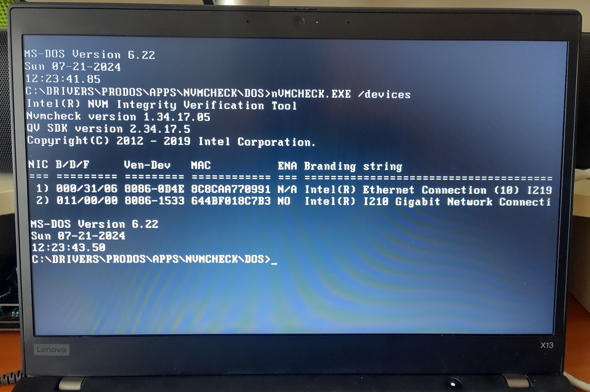Using Intel’s NVMCheck tool, I used it to scan the machine for Intel NICs. My hopes initially went up when I saw the I-219 detected. (The I-210 detected in this screenshot is from my external Thunderbolt 3 adapter.)
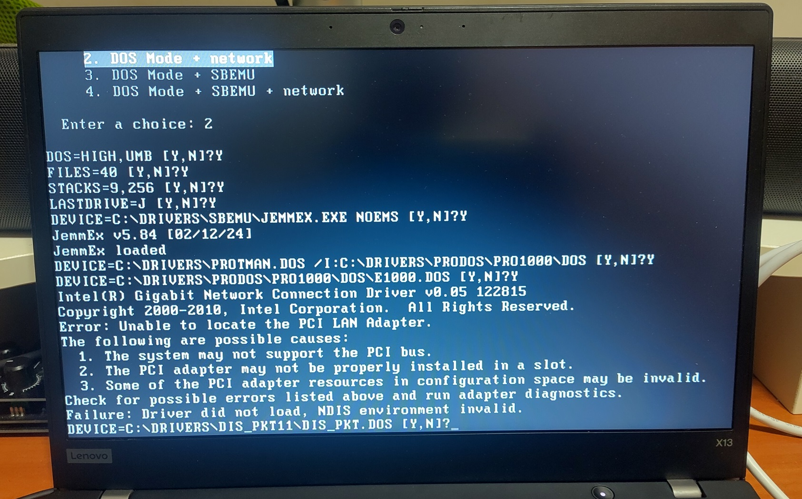However when I tried to use the final release of Intel NIC drivers for MS-DOS, it would not work although the I-219 is supposedly supported by the driver.
With no obvious avenues forward for the I-219, I experimented with another 3 network adapters connected over Thunderbolt.
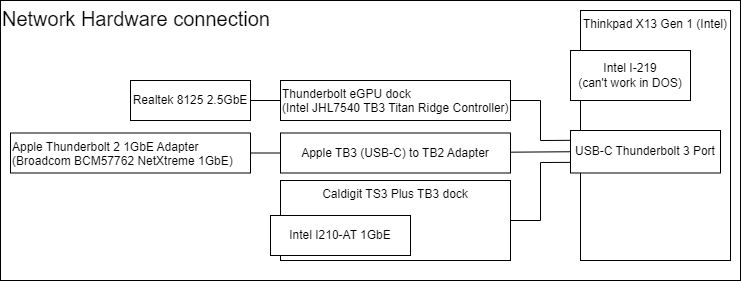This is the connection diagram of all network adapters evaluated.
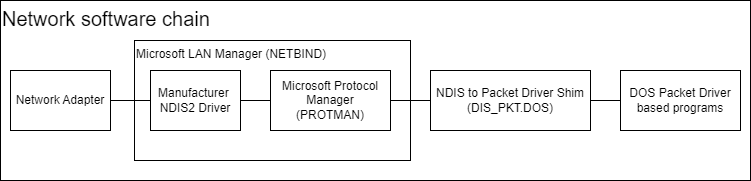All the 3 network adapters I tried have Network Driver Interface Specification (NDIS) 2 drivers provided by the manufacturer to be used by MS Protocol and LAN Managers and a NDIS to Packet Driver Shim.
The shim is required as a common networking utility suite MTCP and programs based on it like my DOS ChatGPT client rely on Packet Drivers.
Realtek 8125 2.5GbE via Thunderbolt eGPU dock
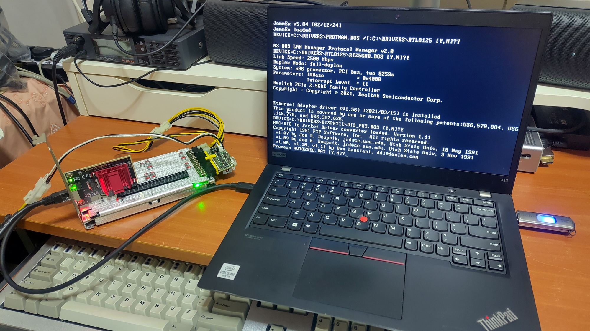I got a PCIe-based Realtek 8125 2.5GbE card and have it connected by a Thunderbolt dock which is actually meant for external GPUs.
A 2.5GBE link can actually be negotiated as shown by the driver if the cable and the other end is capable of it. In practice though, the actual speed is nowhere near.
Apple Thunderbolt 2 1GbE with TB3-TB2 adapter (Broadcom BCM57)
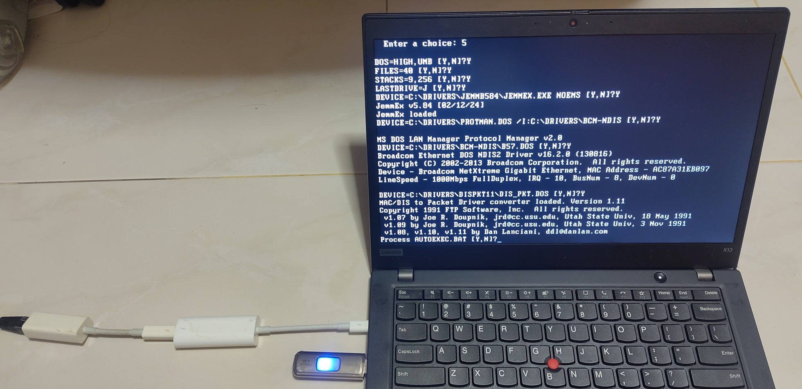The Apple Thunderbolt (2) to Gigabit Ethernet Adapter can be used in conjunction with an also Apple Thunderbolt 3 (USB-C) to Thunderbolt 2 Adapter.
The Ethernet adapter is based on a Broadcom BCM57762 chip. Hence I used a B57 NDIS2 driver.
I noticed the B57 driver introduces an unexplained slowdown in the system such that games are unplayable.
Caldigit TS3 Plus 1GbE via Thunderbolt 3 (Intel I-210)
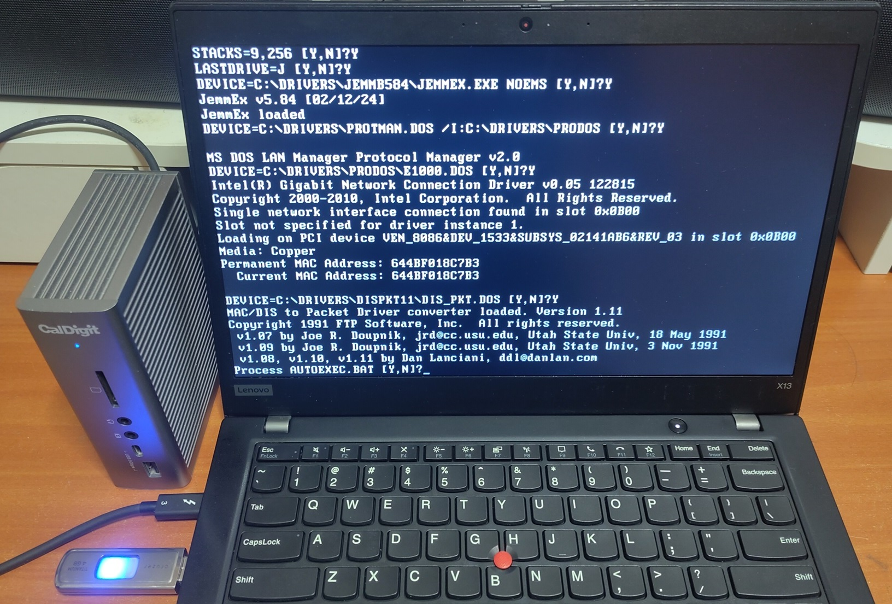I have a Caldigit TS3 Plus Thunderbolt docking station that contains a Gigabit Ethernet port provided by an Intel I-210 chip.
This adapter generally works okay with the final release of Intel NIC drivers for MS-DOS.
The I-210 hardware/driver has unexplained random JEMMEX exception crashes if run together with SBEMU.
Network speed test
I did a short study of the performance and memory usage of the 3 adapters. I used a similar test procedure detailed by Michael Brutman (creator of DOS MTCP network tools).
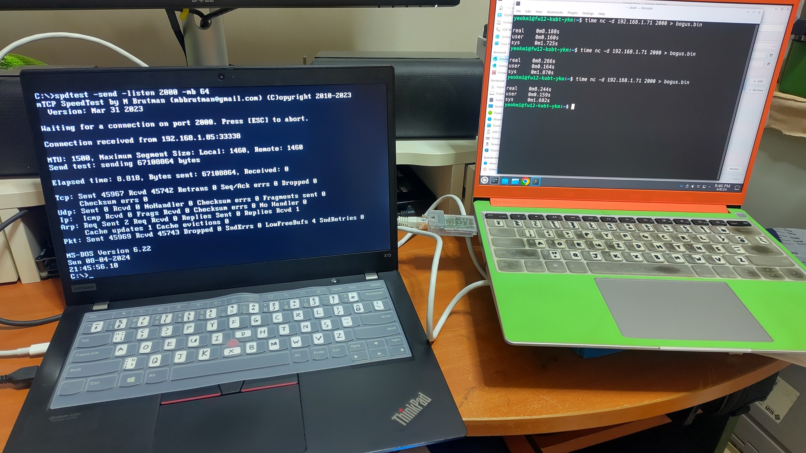I did a point-to-point connection between the DOS machine and my Framework running Kubuntu with a 2.5GbE Ethernet Expansion Card of RTL8156 chipset.
| Send Rate (KB/s) | Recv Rate (KB/s) | protman | driver | disk_pkt | |
|---|---|---|---|---|---|
| Realtek 8125 | 16440.1 | 29135.7 | 128 | 42288 | 2736 |
| BCM57 | 7960.4 | 14791.4 | 128 | 53168 | 2736 |
| Intel I210 | 26698.5 | 19793.4 | 128 | 56336 | 2736 |
The last 3 columns show the memory usage of the different driver components in bytes.
We can observe the transfer speeds do not even come close to 1 Gbit/s or 125000 KB/s.
Performance benchmarks
I ran several benchmark applications from Phil’s Computer Lab DOS Benchmark Pack in stock configuration.
Majority of the tests are run in real mode without the JEMM memory manager unless the program has issues that require it to run in protected mode.
These are the results:
| Time | Idx | Description | Real mode | Protected Mode |
|---|---|---|---|---|
| 00:06 | 1 | 3DBench (Superscape) 1.0 | 11.1 (incorrect) | |
| 00:23 | 2 | 3DBench (Superscape) 1.0c | 106.5 | |
| 00:43 | 3 | Chris’s 3D Benchmark | 218.1 score, 130.8 FPS | |
| 01:10 | 5 | PC Player benchmark 320x200 8bpp | 139.4 | |
| 01:45 | 6 | PC Player benchmark 640x480 8bpp | 22.2 | |
| 02:19 | a | Doom min. details | 2134 gametics, 294 realtics, 253.04 FPS | |
| 02:43 | b | Doom max. details | 2134 gametics, 1799 realtics, 41.52 FPS | |
| 03:49 | c | Quake timedemo | 969 Frames, 7.5s, 128.4 FPS | |
| 04:10 | d | Quake timedemo 360x480 | 969 Frames, 21.7s, 44.7FPS | |
| 04:48 | m | TOPBENCH 3.8 | 290 | |
| 04:55 | n | Speedsys 4.78 | 2904.46 score | |
| 08:16 | e | Quake timedemo 640x480 | Crash (likely insufficient memory) | 969 frames, 167.4s, 5.8 FPS |
| 11:23 | l | Landmark System Speed Test 6.00 | Cannot start | Unreliable results |
The following were skipped as they could not launch:
- 4 - Chris’s 3D Benchmark 640x480
- k - System Information 8.0
- t - CACHECHK (Cache ID tool)
Conclusion
I’m truly impressed at the backward compatibility efforts made by Intel and Lenovo to the point that BIOS backward compatibility is finally removed.
That Thunderbolt worked as well as it was is unexpected but not surprising as it’s the medium that carries the PCIe packets that is transparent to the operating system with appropriate BIOS support. Still I wonder if this level of compatibility is generic or specific to Lenovo’s efforts.
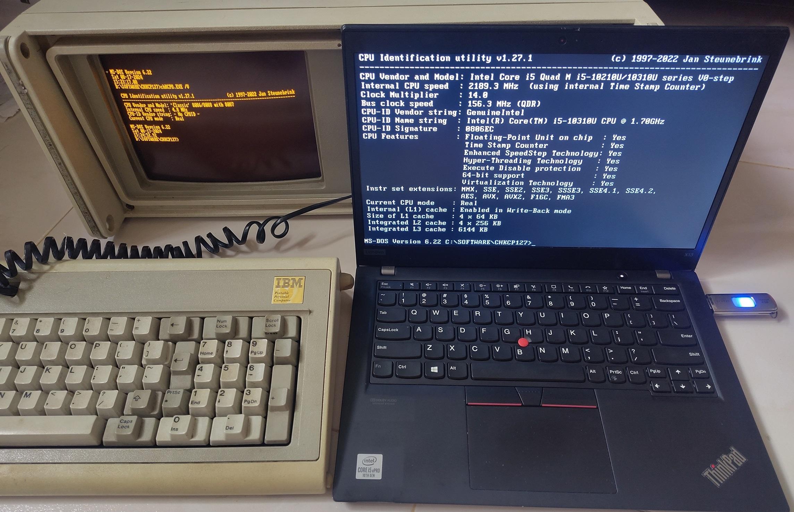My Thinkpad X13G1 together with its ancestor the IBM5155 Portable PC.
The IBM5155 is the first x86-based portable PC first sold by IBM in 1984. Both machines have x86 Intel CPUs running the same MS-DOS 6.22 operating system. It speaks volumes how similar both machines still are despite the 36 years gap. However this is the end of the line, no more Thinkpads made after this model generation will carry a similar level of historical compatibility.
If you have not seen the demo video above, I asked ChatGPT if this machine can run DOS.
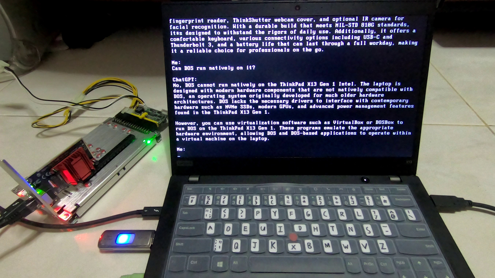I think I just proved ChatGPT wrong :P


{kind=link}
{kind=link}
{kind=link}
{kind=link}
{kind=link}
{kind=link}
{kind=link}
{kind=link}
{kind=link}
{kind=link}
{kind=link}
{kind=link}
{kind=link}
{kind=link}
{kind=link}
{kind=link}
{kind=link}
{kind=link}
{kind=link}
{kind=link}
{kind=link}
{kind=link}
{kind=link}